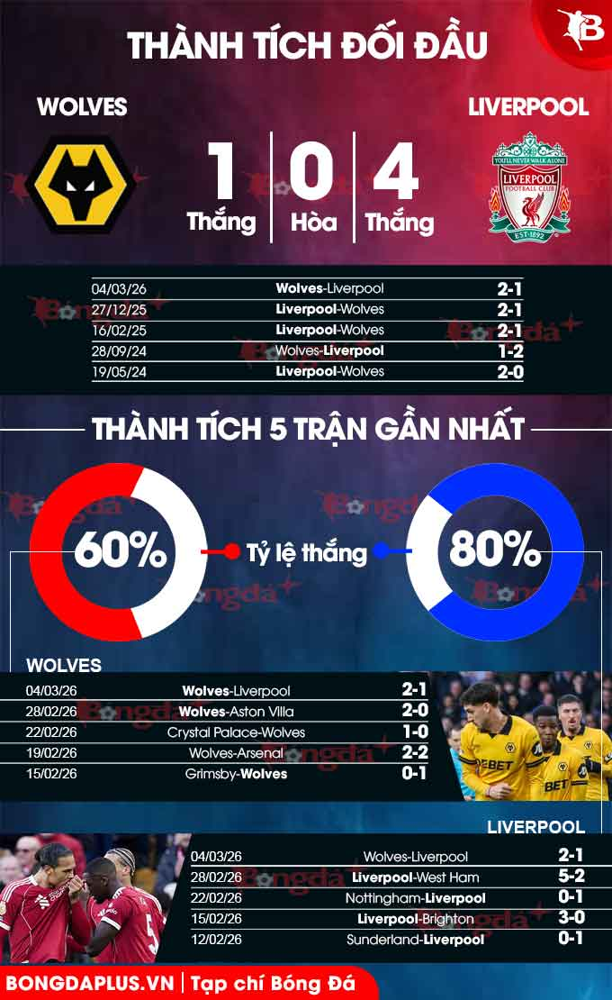
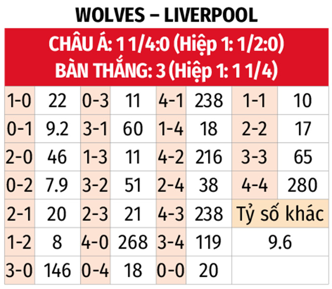

Nhận định bóng đá Wolves vs Liverpool, 03h00 ngày 7/3: The Kop đòi nợ
Nhận định bóng đá trận Wolves vs Liverpool diễn ra vào lúc 03h00 ngày 7/3 ở vòng 5 FA Cup. Sporting News 24 phân tích thông tin lực lượng, đội hình dự kiến, dữ liệu chuyên sâu, dự đoán tỉ số.

Phân tích phong độ Wolves vs Liverpool
Wolves đã trải qua mùa giải 2025/26 tồi tệ và thảm hại khi bị kẹt ở vị trí cuối BXH Ngoại hạng Anh kể từ vòng 3 tới nay. Vitor Pereira đã bị sa thải sau khi không thể dẫn dắt Wolves giành chiến thắng nào trong 10 trận đầu tiên tại Premier League, nhưng bất chấp sự thay đổi trong BHL, đội chủ sân Molineux vẫn phải đợi đến vòng 20 mới có được chiến thắng đầu tiên tại giải đấu cao nhất xứ sương mù.
Sau chiến thắng 3-0 trước West Ham, họ lại trải qua chuỗi 8 trận không thắng, và cuối cùng chuỗi trận này kết thúc khi đánh bại đối thủ Aston Villa với tỷ số 2-0 đầy ngoạn mục. Chiến thắng đó đã được tiếp nối một cách ngoạn mục bằng thắng lợi 2-1 trước chính Liverpool giữa tuần này. Bất chấp những kết quả gần đây có phần khởi sắc, việc Wolves xuống hạng dường như vẫn gần như chắc chắn khi kém nhóm an toàn tới 18 điểm trong bối cảnh mùa giải chỉ còn 8 vòng đấu.
Mặc dù gặp khó khăn ở giải đấu quốc nội, nhưng Wolves đã gây ấn tượng mạnh mẽ ở các giải đấu cúp, đánh bại cả West Ham và Everton trước khi để thua sát nút Chelsea với tỷ số 4-3 ở Cúp Liên đoàn Anh. Họ cũng đã vượt qua Shrewsbury Town (6-1) và Grimsby Town (1-0) để tiến vào vòng 5 FA Cup, nơi sẽ đối đầu Liverpool.
Chắc chắn Arne Slot và các học trò rất muốn đòi món nợ cách đây vài ngày, bởi đó là trận đấu mà họ là những người thi đấu lấn lướt hoàn toàn. Tuy nhiên, sự thiếu ổn định một lần nữa khiến họ ôm hận. Thất bại này khiến Liverpool hiện có 48 điểm sau 29 trận tại Ngoại hạng Anh và rơi xuống vị trí thứ 6 trên BXH.
Mặc dù đôi lúc gặp khó khăn ở giải đấu quốc nội, Liverpool đã thể hiện sự vượt trội trong hai trận đấu tại FA Cup mùa này, khi đánh bại Barnsley 4-1 ở vòng 3 trước khi dễ dàng vượt qua Brighton 3-0 ở vòng 4. Với cơ hội cứu vãn chiến dịch bằng cách nâng cao chiếc cúp FA, Slot sẽ rất mong muốn đội bóng của mình giành chiến thắng ở trận này để chắc suất vào vòng tiếp theo.

Thông tin lực lượng Wolves vs Liverpool mới nhất
Wolves có đội hình mạnh nhất, trong khi Liverpool vắng Conor Bradley, Giovanni Leoni, Florian Wirtz, Stefan Bajcetic, Wataru Endo và Alexander Isak do chấn thương.
Đội hình dự kiến Wolves vs Liverpool
- Wolves (3-5-2): Johnstone; Doherty, Bueno, Krejci; Tchatchoua, Mane, Andre, J Gomes, Wolfe; A Gomes, Armstrong.
- Liverpool (4-2-3-1): Alisson; Jones, Gomez, Van Dijk, Robertson; Gravenberch, Mac Allister; Salah, Szoboszlai, Ngumoha; Ekitike.
Phân tích dữ liệu chuyên sâu Wolves vs Liverpool
- Từ 3 bàn thắng trở lên: 4 trận đối đầu gần nhất đều có 3 bàn thắng được ghi. 3/4 trận sân nhà gần đây của Wolves cùng 8/10 trận vừa qua của Liverpool cũng có ít nhất 3 pha làm bàn. Có thể chờ tổng bàn thắng về 2 3/4 để cổ vũ mưa bàn thắng.
- Tối đa 1 bàn hiệp 1: 6 trận liên tiếp gần đây của Wolves chỉ xuất hiện 1 bàn thắng trong hiệp đầu tiên. 10/11 trận sân khách vừa qua của Liverpool cũng có nhiều nhất 1 bàn trước giờ nghỉ, với 8 trận hòa 0-0. Chưa kể, 13/14 trận đối đầu gần nhất trên sân Molineux cũng chi có không quá 1 bàn trong 45 phút đầu.
- Nhiều góc hiệp 1: Lịch sử đối đầu chứng kiến 7 trận gặp nhau gần nhất giữa đôi bên, bao gồm trận đấu cách đây vài ngày đều kết thúc với tối thiểu 5 tình huống đá phạt góc trong 45 phút đầu tiên. Kịch bản này hoàn toàn có thể tái diễn ở màn so tài này, khi cả hai đội đều cho thấy xu hướng "cày góc" sớm. Theo thống kê, 8/9 trận vừa qua của Liverpool cùng 3/5 trận gần đây của Wolves đều có tối thiểu 5 lần bóng được đặt ở bốn cột góc cuối sân trước giờ nghỉ.
Sporting News 24 dự đoán tỷ số Wolves vs Liverpool
Wolves có thể đã giành chiến thắng trước Liverpool cách đây vài ngày, nhưng The Kop chắc chắn rất muốn phục thù và với chất lượng vượt trội, đội bóng của Arne Slot hoàn toàn có thể sẽ giành chiến thắng trong trận này.
Dự đoán: 1-3
Bạn chọn tỉ số chính xác nào?
